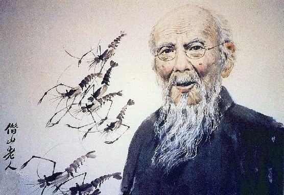

齐白石(1864年1月1日─1957年9月16日)，祖籍安徽宿州砀山，生于湖南长沙府湘潭(今湖南湘潭)人。原名纯芝，字渭青，号兰亭。后改名璜，字濒生，号白石、白石山翁、老萍、饿叟、借山吟馆主者、寄萍堂上老人、三百石印富翁。
是近现代中国绘画大师，世界文化名人。早年曾为木工，后以卖画为生，五十七岁后定居北京。擅画花鸟、虫鱼、山水、人物，笔墨雄浑滋润，色彩浓艳明快，造型简练生动，意境淳厚朴实。所作鱼虾虫蟹，天趣横生。齐白石书工篆隶，取法于秦汉碑版，行书饶古拙之趣，篆刻自成一家，善写诗文。曾任中央美术学院名誉教授、中国美术家协会主席等职。代表作有《蛙声十里出山泉》《墨虾》等。
2017年12月17日晚，齐白石作品《山水十二条屏》亮相拍场，最终以9.315亿元人民币成交，成为目前最贵的中国艺术品。
主要生平
1949年1月，北平解放。参加周恩来总理招待宴会。为毛泽东刻石印两方。担任中央美术学院名誉教授。
1950年，被聘为中央文史馆馆员。4月间，曾和毛泽东共进晚餐，朱德作陪。10月，把82岁时所作的《鹰》和篆书对联“海为龙世界，云是鹤家乡”赠送毛泽东。参加北京市“抗美援朝书画义卖展览会”。冬，为《人民日报》画《和平鸽》1951年2月，画作10余幅参加沈阳市“抗美援朝书画义卖展览会”。
1952年，用三天时间，为北京亚太地区和平大会创作丈二巨幅《白花与和平鸽》。同年，多次创作题为《和平胜利》《和平万岁》的作品。
1953年1月7日，北京文化艺术界200余人参加“齐白石90岁生日庆祝会”，文化部授予齐白石杰出的人民艺术家称号。周恩来出席了晚间的庆祝宴会。担任北京中国画研究会主席10月，当选为中国美术家协会第一任理事会主席。
1954年4月28日，中国美术家协会在故宫博物院举办“齐白石绘画展览会”8月，当选为全国人大代表。9月15日，出席首届全国人代会。
1955年6月，与陈半丁、何香凝等14位画家为世界和平大会合作巨幅《和平颂》
1956年4月27日，世界和平理事会宣布授予齐白石国际和平奖金，9月1日，在北京隆重举行授奖仪式。周恩来总理亲自到场祝贺。
1957年5月15日，担任北京中国画院名誉院长。5--6月间，作最后一幅作品《牡丹》。9月16日，在北京医院逝世。9月22日上午在嘉兴寺举行公祭，周恩来总理等中央领导参加了公祭。
机遇与成就
有一天，他跟其师父遇见两个木匠，师徒两人赶紧让路，齐白石问原因，师父说他们做的是木工细活，就是雕花木匠。一不做，二不休，要强的齐白石发誓又开始拜师学雕花木匠，没过多久，他的雕花手艺学得已小有名气。又一天，他在给一大户人家做活时，偶然看到了一本《芥子园画谱》，这是一本介绍绘画的书籍。对于已经有些绘画基础的齐白石来说，这本书太有吸引力了。于是，他就把这本书借了去，并抄写下来。从此，如获至宝的齐白石，开始照着这本书学绘画，这为他以后成为一代大师打下了坚实的基础。慢慢地，许多人又知道他绘画的手艺。25岁时，他的人生又出现了一次转折。当时，一位叫胡沁园的画家得到了齐白石画的画，觉得齐白石很有悟性，就将齐白石收为徒弟。至此，齐白石正式开始了绘画之路，风格也从以前的画神像改为画山水、花鸟等。后来，胡沁园老师告诉齐白石，想提高绘画艺术，遍访名师是必由之路。这时，他已经是40岁的年龄了，但他仍义无反顾地到了陕西、天津、北京等地，并结识了不少绘画名家，绘画艺术大有进步。
学遍名家的齐白石，又辗转回到家乡，又潜心研究了8年绘画。不甘心的齐白石，决定再次进京，此时他已经是55岁的年龄了。到了北京后，他的绘画欣赏的人不多，他开始以雕刻印章来维持生计。一次，他刻的印章被北京有名的大画家陈师曾看到，而这位画家的师父就是吴昌硕。见到齐白石后，陈师曾对齐白石雕刻的印章和绘画赞赏有加，同时指出他的缺点就是没有自己的风格。已画近40年的画，想创新自己谈何容易，但为了前景，齐白石决定大刀阔斧地改变自己，近60岁时开创出独特的红花墨叶画法，创出一片新天地。同时，他画的虾更是出名。而为了画虾，他还专门养了虾，为的是随时能观察虾，终于将虾的活泼、机灵画得栩栩如生。